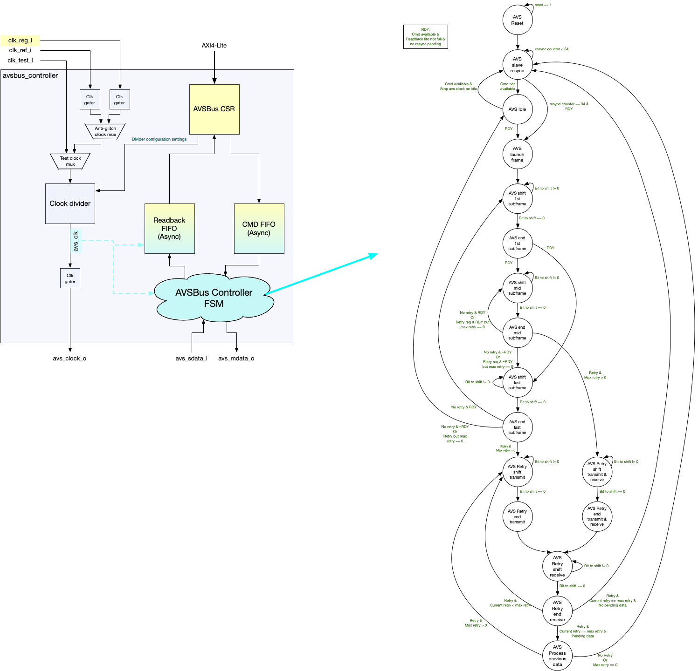

AVSBus Controller
Overview
The AVSBus Controller is a hardware IP that implements the AVSBus 1.3.1 specification for adaptive voltage scaling communication. It acts as a controller (master) that communicates with a single AVS target device (slave) to manage voltage rails, monitor power conditions, and perform real-time voltage adjustments for optimal performance and energy efficiency. This version supports 32-bit frame-based communication without multi-target addressing.
Description and Features
-
Single-Target Support: Communicates with a single AVS target device through a two-wire protocol interface
-
AXI4-Lite Register Interface: A 32-bit AXI4-Lite port, bridged internally to the APB4 register file
-
Command FIFO: 8-deep command queue, crossing from the register clock domain to the AVS clock domain
-
Readback FIFO: 8-deep response buffer with automatic hardware retry on a failed acknowledgment or a bad CRC
-
Flexible Clock Configuration: AVS clock generated from either the register clock or a reference clock, with a programmable divider and duty cycle
-
Maskable Interrupts: Nine sources covering FIFO overruns, retry exhaustion, an unresponsive target and target-signalled interrupts
-
Slave Resync Operation: Automatic periodic resynchronization at a configurable interval, or forced by software
-
CRC-3 Protection: Hardware generation on every command and checking on every response
Architecture
The AVSBus Controller implements an Adaptive Voltage Scaling Bus (AVSBus) 1.3.1 controller for dynamic voltage and frequency scaling (DVFS) in single-target systems, communicating with one AVS target device over a two-wire protocol interface.
The design is a register file, a pair of asynchronous FIFOs that carry commands and responses between the register and AVS clock domains, a protocol FSM that serializes and deserializes subframes, a CRC-3 engine shared between transmit and receive, and the AVS clock generation logic.
AVSBus controller and protocol state machine shows the FIFO, protocol-engine, and clock-generation paths.

AVS Protocol Engine
Software queues commands by writing AVS_CMD, which pushes a 32-bit word into
the command FIFO. The protocol FSM pops each command, prepends the fixed
preamble, appends a calculated CRC-3, and shifts the resulting 32-bit subframe
out on avs_mdata_o. The target’s reply arrives one subframe later: it is
shifted in from avs_sdata_i during the 32 cycles that carry the next
command, checked for a valid frame bit and a good CRC, and pushed into the
readback FIFO.
Retries are automatic. A slave acknowledgment of 1 (resource unavailable) or 2
(bad CRC) causes the master to resend the command, up to
AVS_CFG_0.MAX_RETRIES times; exhausting that budget raises
MAX_RETRIES_ATTEMPTED_INT. Setting MAX_RETRIES to 0 suppresses retries
altogether, and the failing response is delivered to software instead. A reply
whose frame valid bit is set means the target did not respond at all and
raises SLAVE_UNRESPONSIVE_INT. There is no separate programmable response
timeout.
The master also issues periodic slave resync operations, holding avs_mdata_o
high for 34 AVS clock cycles. AVS_CFG_0.RESYNC_INTERVAL sets the interval in
register-clock cycles, and AVS_CFG_1.FORCE_SLAVE_RESYNC_OPERATION requests
one immediately. Both take effect three cycles later, after synchronization
into the AVS clock domain.
Clock Generation and Management
AVSBus clock sources identifies the register, reference, and generated AVS clocks.
| Clock Source | Description |
|---|---|
clk_reg_i |
Register interface clock, synchronous with register access |
clk_ref_i |
Reference clock, independent of AVS bus timing |
Selection |
Software-configurable via |
The selected source passes through an anti-glitch mux and then a programmable
divider, whose ratio and duty cycle are both 8-bit values in AVS_CFG_1. Out
of reset the controller runs on clk_ref_i divided by 4 at a 50% duty cycle.
Both divider fields reset to 0, which is a sentinel: the divider keeps its
hardware defaults until software writes a non-zero value.
Changing the clock configuration is not glitch-free on its own. Set
AVS_CFG_1.TURN_OFF_ALL_PREMUX_CLOCKS to gate both source clocks before
changing the source selection or the divider settings, then clear it
afterwards.
Power is saved at two levels: AVS_CFG_1.STOP_AVS_CLOCK_ON_IDLE gates the AVS
clock whenever the bus is idle, and TURN_OFF_ALL_PREMUX_CLOCKS gates the
clocks entering the mux. Restarting a gated AVS clock always begins with a
34-cycle slave resync.
CRC Verification Engine
The avsbus_crc3 module computes a 3-bit CRC combinationally over a 32-bit
subframe. Two instances are used. The generate instance is fed the outgoing
master subframe with its CRC field zeroed, and its output becomes the three
bits shifted out last. The check instance is fed the received slave subframe
intact, including the CRC the target sent, and reports a good check when the
result is zero. A failed check prevents the subframe from updating
AVS_LATEST_SLAVE_SUBFRAME and AVS_SLAVE_STATUS, and the retry logic
resends the command.
Command and Response FIFO System
AVSBus command and readback FIFOs compares the command and readback FIFO roles and operation.
| FIFO | Command FIFO | Readback FIFO |
|---|---|---|
Depth |
|
|
Direction |
Register clock domain to AVS clock domain |
AVS clock domain to register clock domain |
Occupancy |
|
|
Overrun behaviour |
A write to |
A response received when full is dropped and raises
|
Both are instances of avsbus_async_fifo, which requires a power-of-two
depth. Pointers cross between the two clock domains as Gray codes through
three-stage synchronizers.
While the readback FIFO is full the master launches no further commands, so a
software reader that stops draining AVS_READBACK stalls the bus rather than
losing responses.
Reset and Initialization
The controller takes three resets. rst_clk_div_ni resets the programmable
clock divider, rst_reg_ni resets the register file and the protocol logic,
and rst_ref_ni resets the clk_ref_i leg of the anti-glitch clock mux.
rst_clk_div_ni must be deasserted before rst_reg_ni. The divider has to
be producing a clock before the logic it feeds leaves reset, otherwise the AVS
clock domain never starts.
Because the divider defaults to divide-by-4 on clk_ref_i and the protocol
FSM starts as soon as reset is released, the controller begins issuing slave
resync operations without any software configuration. Configuration is
therefore a matter of adjusting defaults rather than enabling the block:
-
Release
rst_clk_div_ni, thenrst_reg_ni. -
If the default AVS clock is not wanted, set
AVS_CFG_1.TURN_OFF_ALL_PREMUX_CLOCKS, writeAVS_CLOCK_SELECT,CLK_DIVIDER_VALUEandCLK_DIVIDER_DUTY_CYCLE_NUMERATOR, then clearTURN_OFF_ALL_PREMUX_CLOCKS. -
Set
AVS_CFG_0.MAX_RETRIESandAVS_CFG_0.RESYNC_INTERVAL. -
Clear the
AVS_INTERRUPT_MASKbits for the sources of interest; all sources are masked out of reset. -
Write commands to
AVS_CMDand collect responses fromAVS_READBACK.
Data Flow and Control Path
Command Path
-
Software writes
AVS_CMD; the 32-bit word enters the command FIFO. The write is dropped if the FIFO is full. -
The protocol FSM pops a command, builds the master subframe as preamble,
AVS_CMD[29:3]and CRC-3, and shifts it out onavs_mdata_o. -
The target’s reply shifts in on
avs_sdata_iduring the following subframe. -
A reply that is valid and passes CRC updates
AVS_SLAVE_STATUSandAVS_LATEST_SLAVE_SUBFRAMEand is pushed into the readback FIFO; otherwise the retry logic resends the command. -
Software reads
AVS_READBACK, which pops the readback FIFO.
Because writes to a full command FIFO are silently dropped, software that
queues commands in a burst should check AVS_NORMAL_STATUS.CMD_FIFO_FULL or
AVS_FIFOS_STATUS.CMD_FIFO_VACANT_SLOTS first, or enable
CMD_FIFO_OVERFLOW_INT.
Response Inspection
AVS_READBACK is the normal path and advances the FIFO on every read.
AVS_DEBUG_READBACK mirrors the top of the FIFO without advancing it, and
reads 0xFFFFFFFF when the FIFO is empty. AVS_LATEST_SLAVE_SUBFRAME holds the
most recent valid subframe regardless of FIFO state, which is what to read
when the question is what the target is doing now rather than what it said
several commands ago.
Clock Domain Architecture
Two domains carry functional logic. The register domain, clocked by
clk_reg_i, holds the AXI4-Lite bridge, the register file, the command FIFO
write side, the readback FIFO read side and interrupt generation. The AVS
domain, clocked by the generated avs_clock_o, holds the protocol FSM, the
shift registers and the CRC engines.
FIFO pointers cross between the domains as Gray codes. Individual control and
status bits cross through prim_sync3 three-stage synchronizers, and pulses
through prim_sync3_pulse. The reset synchronizers are six stages deep and
take their scan bypass from scan_rst_ni.
Protocol State Machine
cur_state_debug_o exposes the FSM state as a 17-bit one-hot vector,
resynchronized to clk_reg_i. The states, in bit order from 0, are (AVSBus protocol state encodings).
| Bit | State | Meaning |
|---|---|---|
0 |
AVS_RESET |
Out of reset, before the first resync |
1 |
AVS_SLAVE_RESYNC |
Holding |
2 |
AVS_LAUNCH_FRAME_POST_RESYNC |
First command launch after a resync |
3 |
AVS_IDLE |
No command queued; the AVS clock may be gated |
4, 5 |
AVS_SHIFT_1ST_SUBFRAME, AVS_END_1ST_SUBFRAME |
First subframe after idle or resync, launching a command |
6, 7 |
AVS_SHIFT_MID_SUBFRAME, AVS_END_MID_SUBFRAME |
Transmitting one command while receiving the reply to the previous one |
8, 9 |
AVS_SHIFT_LAST_SUBFRAME, AVS_END_LAST_SUBFRAME |
Final subframe, draining the last reply with no new command to send |
10-15 |
AVS_RETRY_* |
The same shift and end pairs used while retrying a failed command, split into transmit-and-receive, transmit-only and receive-only variants |
16 |
AVS_PROCESS_PREVIOUS_SDATA |
Evaluating a received subframe |
Command transmission and response reception overlap: the reply to a command arrives during the subframe that carries the next command, which is why the mid-subframe states do both at once.
Error Handling and Diagnostics
AVSBus error handling describes the controller response to each error condition.
| Condition | Handling |
|---|---|
Bad CRC from the target |
Automatic retry, up to |
Resource unavailable acknowledgment |
Automatic retry, up to
|
Bad data, data type or selector acknowledgment |
No retry; the response is delivered to software |
Retry budget exhausted |
|
Target not responding |
|
Command FIFO overrun |
Write dropped, |
Readback FIFO overrun |
Response dropped, |
Read of an empty readback FIFO |
|
For diagnosis, AVS_NORMAL_STATUS reports bus idle, resync, retry-in-progress
and FIFO states; AVS_FIFOS_STATUS reports occupied and vacant slots in both
FIFOs; AVS_SLAVE_STATUS and AVS_LATEST_SLAVE_SUBFRAME report the target’s
most recent acknowledgment and status response; and cur_state_debug_o exposes
the FSM state to the surrounding system.
Interface
The AVSBus Controller presents an AXI4-Lite register interface, a two-wire
AVSBus protocol interface, and clock, reset, interrupt and DFT interfaces for
system integration. The register file itself is APB4; the controller contains
an axi_lite_to_apb bridge, so APB4 is not exposed at the module boundary.
The parameters and ports of avsbus_controller are listed in avsbus_controller.
AVSBus Frame Format
Both subframes are 32 bits: 29 bits of payload followed by a 3-bit CRC. The
master subframe carries a fixed 2’b01 preamble in its two most significant
bits; the remaining fields occupy the same bit positions as the AVS_CMD
register, so software writes a command in wire order.
AVSBus Master Subframe defines the fields transmitted in a master subframe.
| Field Name | Bit Range | Width | Description |
|---|---|---|---|
Preamble |
[31:30] |
2 |
Fixed |
Command Type |
[29:28] |
2 |
|
Command Group |
[27] |
1 |
|
Command Code |
[26:23] |
4 |
|
Rail Select |
[22:19] |
4 |
|
Command Data |
[18:3] |
16 |
|
CRC-3 |
[2:0] |
3 |
Calculated by hardware over bits [31:3] |
AVSBus Command Codes (Command Group 0) lists the command-group-zero data types, resolutions, and access modes.
| Code | Data Type | Resolution | Description |
|---|---|---|---|
0x0 |
Target Rail Voltage |
1 mV |
16-bit unsigned, read or write |
0x1 |
Vout Transition Rate |
1 mV/us |
MSByte rise rate, LSByte fall rate |
0x2 |
Rail Current |
10 mA |
16-bit unsigned, read only |
0x3 |
Temperature |
0.1 degC |
16-bit signed, read only |
0x4 |
Force Voltage Reset |
N/A |
Requires a command data field of 0x0000 |
0x5 |
Power Mode |
N/A |
3 bits, LSB aligned: 0x0 maximum efficiency, 0x3 maximum power, 0x4-0x7 manufacturer-specific |
0xE |
AVSBus Status |
N/A |
16 bits, encoded per the AVS specification |
0xF |
AVSBus Version |
N/A |
4 bits, LSB aligned, read only |
With command group 1 the command code is manufacturer-specific and AVSBus Slave Subframe above does not apply.
| Field Name | Bit Range | Width | Description |
|---|---|---|---|
Slave Acknowledgment |
[31:30] |
2 |
0 = action performed, 1 = good CRC but resource unavailable, 2 = bad CRC received, 3 = good CRC but bad data, data type or selector. Codes 1 and 2 trigger a hardware retry |
Frame Valid |
[29] |
1 |
0 in a valid frame. A 1 means the target did not
respond and raises |
Status Response |
[28:24] |
5 |
Per the AVS specification: bit 4 VDone, bit 3 StatusAlert, bit 2 AVS_Control, bits 1-0 manufacturer-specific |
Response Data |
[23:8] |
16 |
Read data; 0xFFFF when the master issued a write |
Reserved |
[7:3] |
5 |
Reserved |
CRC-3 |
[2:0] |
3 |
CRC received from the target, checked by hardware |
A received subframe reaches software by two paths. It is pushed into the
readback FIFO and read out of AVS_READBACK, which pops the FIFO, or
inspected without popping through AVS_DEBUG_READBACK. Independently of the
FIFO, a subframe whose frame valid bit is 0 and whose CRC checks also latches
into AVS_LATEST_SLAVE_SUBFRAME and AVS_SLAVE_STATUS, so the current target
status is visible without waiting for the FIFO to drain.
Clock Architecture
The AVS clock is derived from one of two sources, optionally divided, and optionally gated while the bus is idle.
AVS_CFG_1.AVS_CLOCK_SELECT[1:0] selects both the source and whether the
divider is used: bit 1 picks the source (0 = clk_reg_i, 1 = clk_ref_i) and
bit 0 picks the divider (0 = bypass, 1 = divided). The reset value is 2’b11,
so the controller comes up on a divided clk_ref_i.
AVS Clock Configuration Fields defines the source-selection and divider configuration fields.
| Field | Reset | Description |
|---|---|---|
AVS_CFG_1.AVS_CLOCK_SELECT[1:0] |
0x3 |
Clock source and divider bypass |
AVS_CFG_1.CLK_DIVIDER_VALUE[23:16] |
0x0 |
Division ratio. A value below 2 is treated as 2. The reset value 0 is a sentinel that leaves the divider at its hardware default of 4 |
AVS_CFG_1.CLK_DIVIDER_DUTY_CYCLE_NUMERATOR[31:24] |
0x0 |
High-pulse fraction in 1/256 units, so 128 is 50%. A 50% duty cycle is only reachable with an even divider. The reset value 0 is a sentinel that leaves the numerator at its hardware default of 0x80 |
AVS_CFG_1.STOP_AVS_CLOCK_ON_IDLE[8] |
0x0 |
Gate the AVS clock while the bus is idle. The master issues a 34-cycle slave resync whenever the clock restarts |
AVS_CFG_1.TURN_OFF_ALL_PREMUX_CLOCKS[10] |
0x0 |
Gate both clocks feeding the source mux |
Gate the clocks with TURN_OFF_ALL_PREMUX_CLOCKS before changing
AVS_CLOCK_SELECT, CLK_DIVIDER_VALUE or
CLK_DIVIDER_DUTY_CYCLE_NUMERATOR, then release the gate afterwards.
While test_en_i is high the source and divider-bypass muxes ignore
AVS_CLOCK_SELECT, and clk_test_i drives the AVS clock directly.
Reset Architecture
AVSBus Reset Domains identifies the logic reset by each AVSBus reset input.
| Reset | Scope |
|---|---|
rst_clk_div_ni |
The programmable clock divider |
rst_reg_ni |
The register file, the protocol FSM and the reset synchronizers for the register, pre-divider and AVS clock domains |
rst_ref_ni |
The |
rst_clk_div_ni must be deasserted before rst_reg_ni. The divider has to be
producing a clock before the logic it feeds leaves reset, otherwise the AVS
clock domain never starts.
Interrupt Interface
interrupt_o is a level output, asserted while any AVS_INTERRUPT bit is set
and its corresponding AVS_INTERRUPT_MASK bit is clear.
AVSBus Interrupt Sources maps AVS_INTERRUPT bits to the events that set them.
| Bit | Field | Raised when |
|---|---|---|
8 |
READBACK_OVERFLOW_INT |
A target response was dropped because the readback FIFO was full |
7 |
READBACK_UNDERFLOW_INT |
|
6 |
CMD_FIFO_OVERFLOW_INT |
|
5 |
MAX_RETRIES_ATTEMPTED_INT |
A command failed |
4 |
SLAVE_UNRESPONSIVE_INT |
The target did not drive a valid subframe |
3 |
READBACK_HAS_DATA_INT |
The readback FIFO holds data for software |
2 |
READBACK_FIFO_FULL_INT |
The readback FIFO is full; no further commands launch until it drains |
1 |
CMD_FIFO_FULL_INT |
The command FIFO is full |
0 |
AVS_SLAVE_ISSUED_INTERRUPT |
The target signalled an interrupt |
AVS_INTERRUPT_MASK is a disable mask and every bit resets to 1, so all
sources are masked after reset and software must clear a bit to enable that
source. Interrupt bits are cleared by writing 1 to the matching bit of
AVS_INTERRUPT_CLEAR; those bits self-clear.
Pad Enable Interface
AVS_CONFIG.AVS_GPIO_ENABLE drives avs_gpio_enable_o, which enables the
pads carrying the AVSBus signals: output enable for the avs_clock and
avs_mdata pins and input enable for the avs_sdata pin. It resets to 1,
because the protocol FSM begins running as soon as reset is deasserted.
Timing
AVSBus Protocol Timing summarises the subframe and clock timing.
| Parameter | Value |
|---|---|
Subframe length |
32 |
Slave resync |
34 |
Minimum AVS clock division |
2, when the divider is selected |
Resync interval |
|
Pin-level setup, hold and propagation figures are a function of the implementation and are not specified by this IP.
Integration Example
The register port takes the AXI4-Lite structs from avsbus_controller_pkg.
avsbus_controller #(
.COMMAND_FIFO_DEPTH (8),
.READBACK_FIFO_DEPTH (8)
) u_avs_ctrl (
// Clocks and resets
.clk_reg_i (reg_clk),
.clk_ref_i (ref_clk),
.rst_ref_ni (ref_rst_n),
.rst_reg_ni (reg_rst_n),
.rst_clk_div_ni (clk_div_rst_n), // deassert before rst_reg_ni
// AVSBus interface
.avs_sdata_i (avs_sdata),
.avs_mdata_o (avs_mdata),
.avs_clock_o (avs_clock),
.avs_gpio_enable_o (avs_pad_enable),
// AXI4-Lite register interface
.axil_req_i (avs_axil_req),
.axil_resp_o (avs_axil_resp),
.interrupt_o (avs_irq),
// DFT
.scan_rst_ni (scan_rst_n),
.test_en_i (test_en),
.clk_test_i (test_clk),
.cur_state_debug_o (avs_fsm_state)
);Memory Map
Overview
The AVSBus Controller occupies a 128-byte address space (0x00-0x7F) reached through its AXI4-Lite port. The register map holds the command and readback FIFO windows, status registers for monitoring the bus and the target, interrupt status, mask and clear registers, and configuration registers for the clock, the retry budget and the resync interval.
Address Alignment and Access Requirements
All registers are 32 bits wide and aligned to a 4-byte boundary. The highest
allocated offset is 0x58; offsets 0x5C through 0x7F are unallocated and
reserved.
The controller decodes only the low 7 address bits, so an access above 0x7F
aliases back onto a live register rather than erroring. The integrating
address decoder is responsible for confining the block to its 128-byte window.
Stored registers honour byte strobes, so a partial write updates only the addressed byte lanes. The two FIFO windows do not:
-
AVS_CMDignores write strobes and pushes the whole 32-bit write data word into the command FIFO, so it must be written with a single full-width access. A partial write enqueues a malformed command. -
AVS_READBACKpops the readback FIFO on any read, whatever the access width, so it must be read exactly once per response.AVS_DEBUG_READBACKreturns the same data without popping.
Neither FIFO window back-pressures the bus; both report a failed access
instead. A write to AVS_CMD while the command FIFO is full is dropped, and a
read of AVS_READBACK while the readback FIFO is empty returns the FIFO
contents at the read pointer rather than a defined value. Each case raises its
interrupt and completes the access with an error response, so software can
detect the condition from the bus response alone. AVS_DEBUG_READBACK reads
0xFFFFFFFF when the FIFO is empty and never errors, which makes it the safer
register to poll.
Detailed Register Map
AVSBus Controller Address Map
Command, readback, status, and interrupt registers for the AVSBus (V1.3.1) controller.
Register List:
| Address | Name | Access | Description |
|---|---|---|---|
| 0x0 | AVS_CMD | W | The command+data to be transferred to the AVS bus |
| 0x4 | AVS_READBACK | R | Response data from AVS slave device (updated in response to both AVS read and write commands). Reading this register causes the AVS response readback fifo pointer to advance. |
| 0x8 | AVS_DEBUG_READBACK | R | This register mirrors the AVS_READBACK register, but reading it does NOT affect the AVS readback fifo pointer. Provided for debug purposes. |
| 0xC | AVS_LATEST_SLAVE_SUBFRAME | R | This register contains the most recently received subframe from the AVS slave, bypassing the AVS readback fifo. It is provided so that APB can see the current slave StatusResponse and SlaveAck settings in a timely fashion, since the status data from the next entry in the readback fifo might have considerable latency relative to when it was initially received from the AVS Slave. |
| 0x20 | AVS_NORMAL_STATUS | R | Various Status bits indicating normal operating conditions for APB2AVS bridge block. These all have corresponding maskable bits in the AVS_INTERRUPT register |
| 0x24 | AVS_SLAVE_STATUS | R | Contains the most recent status feedback from the AVS slave device |
| 0x28 | AVS_FIFOS_STATUS | R | Contains the number of occupied and vacant slots in the AVS master's command and readback FIFOs |
| 0x30 | AVS_INTERRUPT | R | Interrupt register - A '1' indicates an interrupt has occurred for that bit. To clear the interrupt bit, write to the corresponding field in the AVS_INTERRUPT_CLEAR register. |
| 0x34 | AVS_INTERRUPT_MASK | RW | Interrupt mask register - Determines which AVS_INTERRUPT bits can trigger an interrupt |
| 0x38 | AVS_INTERRUPT_CLEAR | W | Write 1 to clear corresponding interrupt bit |
| 0x50 | AVS_CFG_0 | RW | Configuration register for APB2AVS bridge block |
| 0x54 | AVS_CFG_1 | RW | Configuration register for APB2AVS bridge block |
| 0x58 | AVS_CONFIG | RW | AVS Configuration Register |
Register Details:
AVS_CMD
| Bits | Field | Access | Reset | Description |
|---|---|---|---|---|
| 31:30 | Reserved | - | - | Reserved |
| 29:28 | R_OR_W | W | 0x0 | Read or write type: [list] [*]0x0 - Commit Write [*]0x1 - Hold Write [*]0x2 - Read [/list] |
| 27 | CMD_GRP | W | 0x0 | Command group: Set to 1 for manufacturer-specific Command Code (cmd_code), otherwise 0 |
| 26:23 | CMD_CODE | W | 0x0 | Command Code (For cmd_group=0. For cmd_group=1, this is manufacturer-specific): [list] [*]0x0 - Target Rail Voltage Read/Write [*]0x1 - Vout Transition Rate Read/Write [*]0x2 - Rail Current Read [*]0x3 - Temperature Read [*]0x4 - Force Voltage Reset (Requires wr_cmd_data=0x0) [*]0x5 - Power Mode Read/Write [*]0xe - AVSBus Status Read/Write [*]0xf - AVSBus Version Read [/list] |
| 22:19 | RAIL_SEL | W | 0x0 | Rail Select: 0x0 - Rail 0 0x1 - Rail 1 0xf - Broadcast |
| 18:3 | CMD_DATA | W | 0x0 | Write Cmd Data. Formats: [list] [*]Voltage (cmd_code 0x0): 16-bit unsigned int, 1LSB=1mV [*]Transition Rate (cmd_code 0x1): [list] [*]MSByte: Rise Rate, 8-bit unsigned int, 1LSB=1mV/us [*]LSByte: Fall Rate, 8-bit unsigned int, 1LSB=1mV/us [/list] [*]Reset Voltage (cmd_code 0x4): 16-bits, all zeroes [*]Power Mode (cmd_code 0x5): 3-bits, LSB aligned: [list] [*]0x0 - Maximum Efficiency [*]0x3 - Maximum Power [*]0x4-0x7 - Manufacturer-specific [/list] [*]AVSBus Status (cmd_code 0xe): 16-bits, encoded per AVS Spec [*]AVSBus Version (cmd_code 0xf): 4 bits encoded per AVS Spec, LSB-aligned [*]For read cmd_code's, this is 0xffff [/list] |
| 2:0 | Reserved | - | - | Reserved |
AVS_READBACK
| Bits | Field | Access | Reset | Description |
|---|---|---|---|---|
| 31:30 | SLAVE_ACK | R | 0x0 | Indicates whether command executed or not - codes 0x1 and 0x2 trigger automatic retries by hardware: [list] [*]0x0: Action Performed [*]0x1: Good CRC received but resource unavailable - hardware will retry [*]0x2: Bad CRC received - hardware will retry [*]0x3: Good CRC received but bad data, data type or selector - no hardware retry [/list] |
| 29 | CONST0 | R | 0x0 | Always 0 |
| 28:24 | STATUS_RESPONSE | R | 0x0 | 5-bit field indicating general condition of the slave, per AVS spec StatusReponse field: [list] [*]bit 4: VDone - AND of all VDone bits of active rails [*]bit 3: StatusAlert - Indicates potential status issue, requiring AVSBus Status read cmd for details [*]bit 2: AVS_Control - 1 if ABSBus is controlling at least 1 device output, 0 otherwise. [*]bit 1: MfrSpcfc_Stts1 - Manufacturer-specific [*]bit 0: MfrSpcfc_Stts2 - Manufacturer-specific [/list] |
| 23:8 | CMD_DATA | R | 0x0 | Read Cmd Data. Format depends on cmd_code in previous master subframe:[list] [*]Voltage (cmd_code 0x0): 16-bit unsigned int, 1LSB=1mV [*]Transition Rate (cmd_code 0x1): [list] [*]MSByte: Rise Rate, 8-bit unsigned int, 1LSB=1mV/us [*]LSByte: Fall Rate, 8-bit unsigned int, 1LSB=1mV/us [/list] [*]Current (cmd_mode 0x2): 16-bit unsigned, 1LSB=10mA [*]Temperature (cmd_code 0x3): 16-bit signed, 1LSB=0.1degC [*]Power Mode (cmd_code 0x5): 3-bits, LSB aligned: [list] [*]0x0 - Maximum Efficiency [*]0x3 - Maximum Power [*]0x4-0x7 - Manufacturer-specific [/list] [*]AVSBus Status (cmd_code 0xe): 16-bits, encoded per AVS Spec [*]AVSBus Version (cmd_code 0xf): 4 bits encoded per AVS Spec, LSB-aligned [*]If master issued a write (rw!=0x2) in previous master subframe, this field is 0xffff [/list] |
| 7:3 | Reserved | - | - | Reserved |
| 2:0 | CRC | R | 0x0 | The CRC-3 code received from slave |
AVS_DEBUG_READBACK
| Bits | Field | Access | Reset | Description |
|---|---|---|---|---|
| 31:0 | AVS_SLAVE_SUBFRAME | R | 0xFFFFFFFF | The current top-of-fifo AVS slave response sub-frame in the readback fifo |
AVS_LATEST_SLAVE_SUBFRAME
| Bits | Field | Access | Reset | Description |
|---|---|---|---|---|
| 31:0 | AVS_SLAVE_SUBFRAME | R | 0xFFFF | The most recently received AVS slave response sub-frame |
AVS_NORMAL_STATUS
| Bits | Field | Access | Reset | Description |
|---|---|---|---|---|
| 31:23 | Reserved | - | - | Reserved |
| 22 | AVS_SLAVE_IS_IN_RESYNC | R | 0x0 | Indicates that the AVS master is issuing a slave resync operation (34 clock cycles of holding mdata high) |
| 21 | AVS_BUS_IS_IDLE | R | 0x0 | Indicates that neither AVS master nor slave is currently driving a transaction on the AVS bus |
| 20 | READBACK_HAS_DATA | R | 0x0 | Indicates AVS_READBACK register has data ready to read on APB |
| 19 | READBACK_FIFO_FULL | R | 0x0 | Indicates read-back fifo is full - no new AVS commands will be launched until space is freed by an AVS_READBACK access |
| 18 | CMD_FIFO_FULL | R | 0x0 | Indicates AVS_CMD fifo is full - any additional APB writes to AVS_CMD will be dropped until the AVS bus can accept the next command, thus freeing space in the cmd fifo |
| 17 | CMD_FIFO_EMPTY | R | 0x0 | Indicates AVS_CMD fifo is empty |
| 16 | AVS_MASTER_IS_RETRYING | R | 0x0 | Master is currently in the middle of retrying a failed command |
| 15:0 | TOTAL_RETRIES | R | 0x0 | Total number of retries attempted by the AVS Master |
AVS_SLAVE_STATUS
| Bits | Field | Access | Reset | Description |
|---|---|---|---|---|
| 31:18 | Reserved | - | - | Reserved |
| 17:16 | AVS_SLAVE_ACK | R | 0x0 | The SlaveAck bits of the most recent slave subframe received: [list] [*]00: Action Performed [*]01:Good CRC received by resource unavailable. No action performed (triggers retry) [*]10: Bad CRC received (triggers retry) [*]11: Good CRC received bit bad data, data type, or selector. No action performed [/list] |
| 15:5 | Reserved | - | - | Reserved |
| 4:0 | AVS_SLAVE_STATUS_RESPONSE | R | 0x0 | The 5-bit Slave StatusResponse of the most recent slave subframe received, indicating the general condition of the slave, per AVS spec StatusReponse field: [list] [*]bit 4: VDone - AND of all VDone bits of active rails [*]bit 3: StatusAlert - Indicates potential status issue, requiring AVSBus Status read cmd for details [*]bit 2: AVS_Control - 1 if ABSBus is controlling at least 1 device output, 0 otherwise. [*]bit 1: MfrSpcfc_Stts1 - Manufacturer-specific [*]bit 0: MfrSpcfc_Stts2 - Manufacturer-specific [/list] |
AVS_FIFOS_STATUS
| Bits | Field | Access | Reset | Description |
|---|---|---|---|---|
| 31:28 | Reserved | - | - | Reserved |
| 27:24 | READBACK_FIFO_VACANT_SLOTS | R | 0x8 | Number of vacant slots in the readback FIFO |
| 23:20 | Reserved | - | - | Reserved |
| 19:16 | READBACK_FIFO_OCCUPIED_SLOTS | R | 0x0 | Number of occupied slots in the readback FIFO |
| 15:12 | Reserved | - | - | Reserved |
| 11:8 | CMD_FIFO_VACANT_SLOTS | R | 0x8 | Number of vacant slots in the command FIFO |
| 7:4 | Reserved | - | - | Reserved |
| 3:0 | CMD_FIFO_OCCUPIED_SLOTS | R | 0x0 | Number of occupied slots in the command FIFO |
AVS_INTERRUPT
| Bits | Field | Access | Reset | Description |
|---|---|---|---|---|
| 31:9 | Reserved | - | - | Reserved |
| 8 | READBACK_OVERFLOW_INT | R | 0x0 | Indicates that the response from AVS slave could not be written to readback FIFO due to it being full => response was dropped |
| 7 | READBACK_UNDERFLOW_INT | R | 0x0 | Indicates that an APB read on the AVS_READBACK reg occurred when the readback fifo was empty (AVS_NORMAL_STATUS:readback_has_data=0) |
| 6 | CMD_FIFO_OVERFLOW_INT | R | 0x0 | Indicates that an APB write to AVS_CMD was attempted when the the command fifo was already full - the command is dropped |
| 5 | MAX_RETRIES_ATTEMPTED_INT | R | 0x0 | Indicates that the AVS Master failed to receive a non-failure acknowledgement from the Slave after a command was retried the maximum allowable number of times (as determined by AVS_CFG_0:max_retries) |
| 4 | SLAVE_UNRESPONSIVE_INT | R | 0x0 | Indicates the AVS Slave device is not responding to command subframes from the Master |
| 3 | READBACK_HAS_DATA_INT | R | 0x0 | Indicates AVS_READBACK register has data ready to read on APB |
| 2 | READBACK_FIFO_FULL_INT | R | 0x0 | Indicates read-back fifo is full - no new AVS commands will be launched until space is freed by an AVS_READBACK access |
| 1 | CMD_FIFO_FULL_INT | R | 0x0 | Indicates AVS_CMD fifo is full - any additional APB writes to AVS_CMD will be dropped until the AVS bus can accept the next command, thus freeing space in the cmd fifo |
| 0 | AVS_SLAVE_ISSUED_INTERRUPT | R | 0x0 | Indicates the AVS slave has signaled an interrupt |
AVS_INTERRUPT_MASK
| Bits | Field | Access | Reset | Description |
|---|---|---|---|---|
| 31:9 | Reserved | - | - | Reserved |
| 8 | DISABLE_READBACK_OVERFLOW_INT | RW | 0x1 | Disable readback_overflow interrupt |
| 7 | DISABLE_READBACK_UNDERFLOW_INT | RW | 0x1 | Disable readback_underflow interrupt |
| 6 | DISABLE_CMD_FIFO_OVERFLOW_INT | RW | 0x1 | Disable cmd_fifo_overflow interrupt |
| 5 | DISABLE_MAX_RETRIES_ATTEMPTED_INT | RW | 0x1 | Disable max_retries_attempted interrupt |
| 4 | DISABLE_SLAVE_UNRESPONSIVE_INT | RW | 0x1 | Disable slave_unresponsive interrupt |
| 3 | DISABLE_READBACK_HAS_DATA_INT | RW | 0x1 | Disable readback_has_data interrupt |
| 2 | DISABLE_READBACK_FIFO_FULL_INT | RW | 0x1 | Disable readback_fifo_full interrupt |
| 1 | DISABLE_CMD_FIFO_FULL_INT | RW | 0x1 | Disable cmd_fifo_full interrupt |
| 0 | DISABLE_AVS_SLAVE_ISSUED_INTERRUPT | RW | 0x1 | Disable notification of AVS slave interrupt |
AVS_INTERRUPT_CLEAR
| Bits | Field | Access | Reset | Description |
|---|---|---|---|---|
| 31:9 | Reserved | - | - | Reserved |
| 8 | CLEAR_READBACK_OVERFLOW_INT | W | 0x0 | Clear readback_overflow interrupt |
| 7 | CLEAR_READBACK_UNDERFLOW_INT | W | 0x0 | Clear readback_underflow interrupt |
| 6 | CLEAR_CMD_FIFO_OVERFLOW_INT | W | 0x0 | Clear cmd_fifo_overflow interrupt |
| 5 | CLEAR_MAX_RETRIES_ATTEMPTED_INT | W | 0x0 | Clear max_retries_attempted interrupt |
| 4 | CLEAR_SLAVE_UNRESPONSIVE_INT | W | 0x0 | Clear slave_unresponsive interrupt |
| 3 | CLEAR_READBACK_HAS_DATA_INT | W | 0x0 | Clear readback_has_data interrupt |
| 2 | CLEAR_READBACK_FIFO_FULL_INT | W | 0x0 | Clear readback_fifo_full interrupt |
| 1 | CLEAR_CMD_FIFO_FULL_INT | W | 0x0 | Clear cmd_fifo_full interrupt |
| 0 | CLEAR_AVS_SLAVE_ISSUED_INTERRUPT | W | 0x0 | Clear avs_slave_issued_interrupt |
AVS_CFG_0
| Bits | Field | Access | Reset | Description |
|---|---|---|---|---|
| 31:24 | Reserved | - | - | Reserved |
| 23:16 | MAX_RETRIES | RW | 0x5 | Maximum number of times to attempt a retry if an AVS command returns a fail status (either due to targeted resource being busy or CRC failure) |
| 15:0 | RESYNC_INTERVAL | RW | 0x1000 | Max interval to issue slave resync operation on AVS bus, expressed in number of APB clock cycles. NOTE: there is a 3 cycle delay for the resync flag to be seen by the avs controller due to synchronization. |
AVS_CFG_1
| Bits | Field | Access | Reset | Description |
|---|---|---|---|---|
| 31:24 | CLK_DIVIDER_DUTY_CYCLE_NUMERATOR | RW | 0x0 | Determines the desired duty cycle of the divided clock (when avs_clock_select is set to select the divided APB clock or refclk clock). This value will be divided by 256 to determine the high-pulse percentage of the divided clock period. Depending on the clk_divider_value, it may not be possible to precisely achieve the desired duty cycle - in that case, the closest possible fit is used. If this is set to 0, a value of 1 will be assumed. This is set to 0 by default to trick the clock divider into maintaining the HW-default settings (numerator=0x80) by matching the FF default in the resynced version of the signal. |
| 23:16 | CLK_DIVIDER_VALUE | RW | 0x0 | Determines the divisor value used to generate the AVS clock (when avs_clock_select is set to select the divided APB clock or divided refclk clock). The duty cycle of the divided clock depends both on the clk_divider_value together with the clk_divider_duty_cycle_numerator value. A 50% duty cycle is only possible on even clk_divider_values with clk_divider_duty_cycle_numerator set to 128. This field requires a minimum value of 2 - for lower values, 2 will be assumed. This is set to 0 by default to trick the clock divider into maintaining the HW-default settings (divider=0x4) by matching the FF default in the resynced version of the signal. |
| 15:11 | Reserved | - | - | Reserved |
| 10 | TURN_OFF_ALL_PREMUX_CLOCKS | RW | 0x0 | Gate off all clocks entering the AVS clock mux - do this before changing the mux selection or changing the clock divider settings, then turn back on afterwards |
| 9 | FORCE_SLAVE_RESYNC_OPERATION | RW | 0x0 | Force master to issue a slave resync (34 clock cycles of holding the mdata signal high) at the next possible opportunity. NOTE: there is a 3 cycle delay for the resync flag to be seen by the avs controller due to synchronization. |
| 8 | STOP_AVS_CLOCK_ON_IDLE | RW | 0x0 | When the AVS bus is idle, gate the avs_clock from running. Restart it when there are new commands to be run. The master will always first issue 34 slave-resync cycles when the clock first restarts. |
| 7:2 | Reserved | - | - | Reserved |
| 1:0 | AVS_CLOCK_SELECT | RW | 0x3 | Selects which clock to use for AVS Clock: [list] [*] 00: Use the APB clock directly as the AVS clock [*] 01: Use a divided version of APB clock as the AVS Clock. The clock divider settings are determined by AVS_CFG_1:clk_divider_value and AVS_CFG_1:clk_divider_duty_cycle_numerator [*] 10: Use the refclk clock directly as the AVS clock [*] 11: Use a divided version of refclk clock as the AVS Clock. The clock divider settings are determined by AVS_CFG_1:clk_divider_value and AVS_CFG_1:clk_divider_duty_cycle_numerator [/list] |
AVS_CONFIG
| Bits | Field | Access | Reset | Description |
|---|---|---|---|---|
| 31:1 | Reserved | - | - | Reserved |
| 0 | AVS_GPIO_ENABLE | RW | 0x1 | Enable AVSBus connection to GPIOs. The effective sets OE of the GPIOs dedicated to avs_clock and avs_cdata to 1, sets IE of GPIO dedicated to avs_tdata to 1. By default, this is enabled as the AVSBus state machine immediately starts after reset deassertion. |